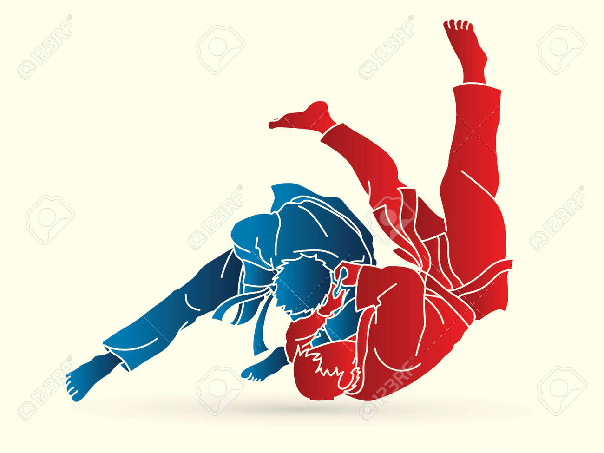
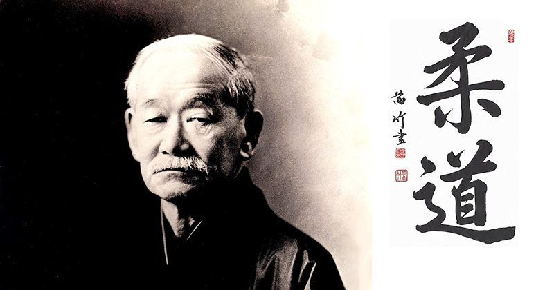

JUDO
Este tipo de arte marcial tradicional de origen japonés se caracteriza por el hecho de que, al
contrario que otras disciplinas en que se prioriza el golpe, en el judo el principal mecanismo
de combate es el agarre. En este sentido, en el judo se absorbe la fuerza y el peso del contrincante
para lograr derrotarle.

Esta disciplina, aunque espectacular, no resulta especialmente agresiva y está más centrada en
la defensa: se focaliza en utilizar la propia fuerza del rival contra él para desestabilizarle y
derribarle. Aún así requiere de un entrenamiento de todo el cuerpo y resulta un deporte muy técnico,
incorporando además llaves. sumisiones y estrangulaciones
¿Que es el Judo?
El judo es un deporte de combate, el cual se basa en derribar o proyectar al contrario contra
el piso, éste suele ponerse en práctica sobre un tatami (superficie que amortigua las caídas
de los peleadores). La indumentaria utilizada se denomina judogi, la cual es bastante resistente
a los roces y jalones. Este deporte se identifica por su preparación tanto física (técnicas y tácticas)
como psicológica, para que el atleta pueda cumplir con las exigencias del mismo.
Historia
Fue creado por el maestro japonés Jigorō Kanō en 1882, conocido en ese entonces como Kano-Ryu-Jujutsu,
y enriquecido por el maestro Kyūzō Mifune después de la muerte de Jigorō Kanō, período en el que Mifune
consolidó la técnica y elegancia con la que se conoce al judo hoy día. Kanō recopiló la esencia técnica
(proyecciones, luxaciones, inmovilizaciones, estrangulaciones, desarmes y golpes) y táctica
(desplazamientos, posicionamientos, transiciones, métodos de respiración, etc.) de dos de las antiguas
escuelas clásicas de combate cuerpo a cuerpo japonés medievales, adaptándolas a la simulación de un
combate deportivo (Randori) en tiempo real.

Escuela mas famosa de JUDO en Mexico